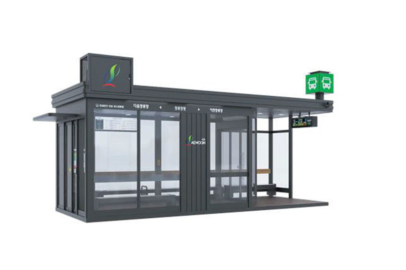
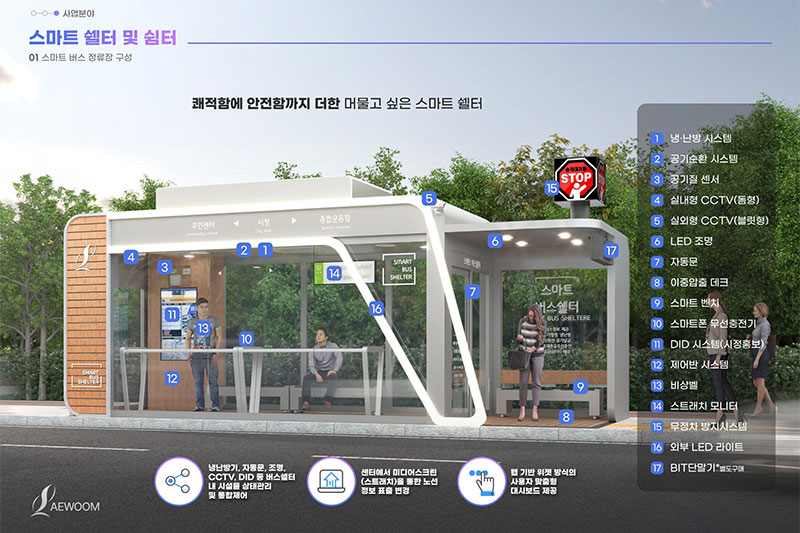
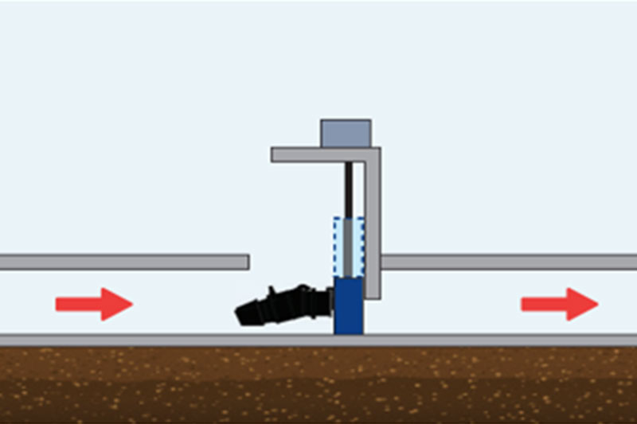
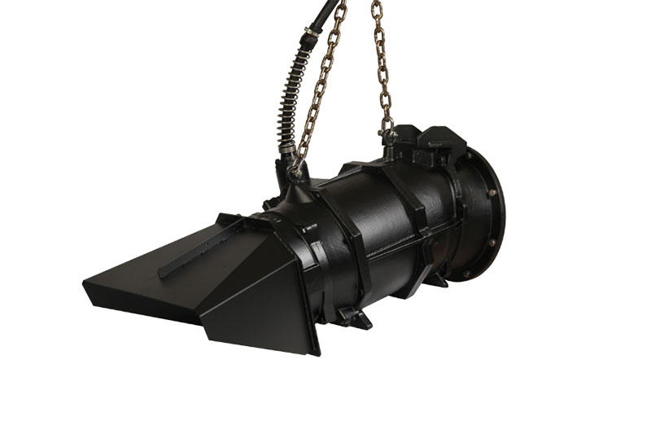
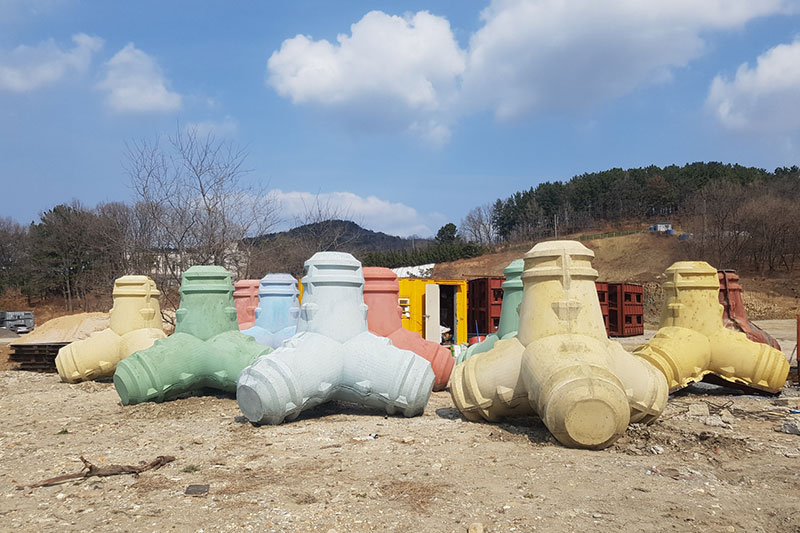
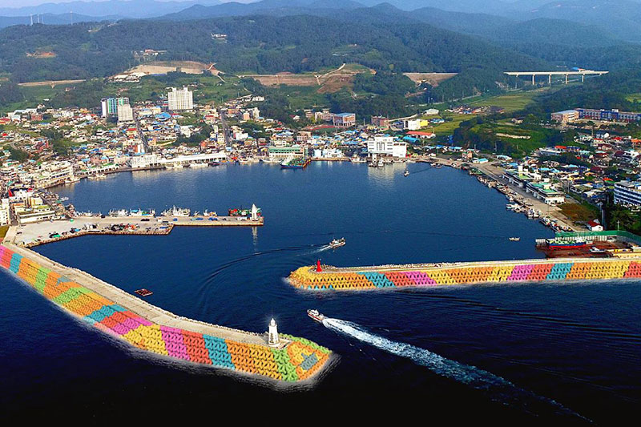
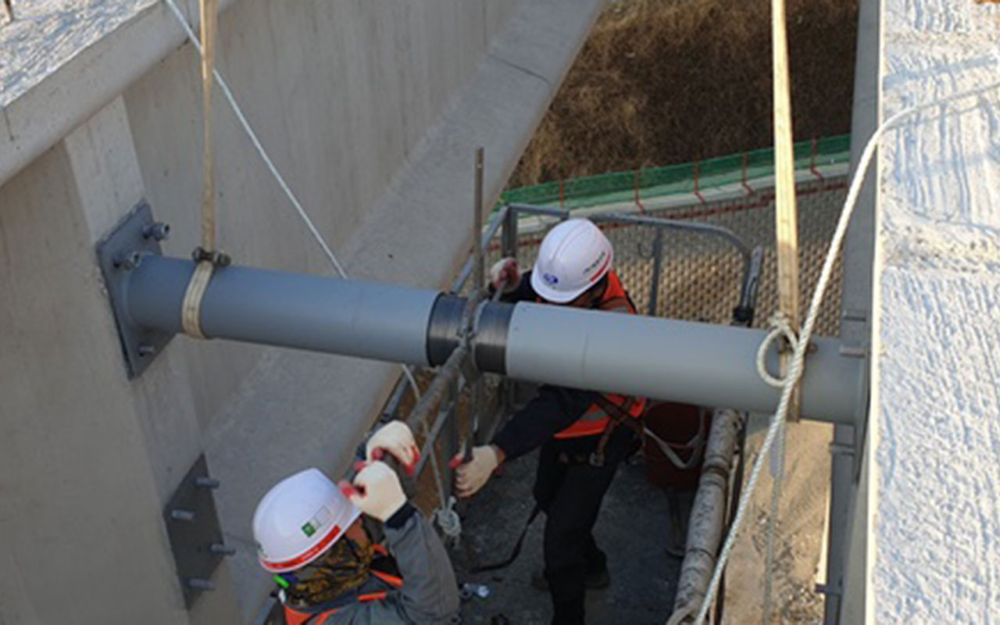
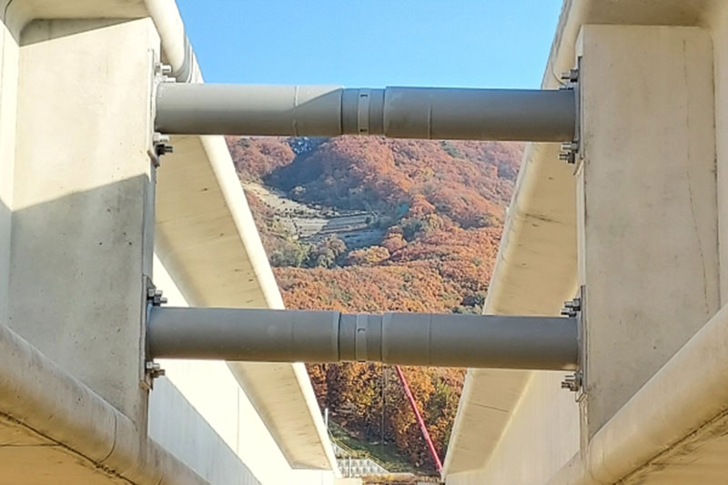

기후위기와 도시 인프라 노후화, 신종 재난의 등장으로 재난안전 기술은 더욱 정교해지고 있다. 행정안전부가 최근 지정(지정일 2025년 10월~2026년 4월)한 재난안전신기술은 폭우와 침수, 도시 기반시설 유지관리, 재난 대응 인프라 등 다양한 분야에서 새로운 해결책을 제시한다. 현장의 문제를 해결하기 위해 탄생한 최신 재난안전신기술을 소개한다.
공기질부터 피난 기능까지, 진화하는 스마트 쉘터
IoT기반 능동형 다목적 스마트 쉘터 구성을 통한
미세먼지 및 냉난방 원격감시제어 기술
주식회사 새움
폭염과 미세먼지가 일상이 된 시대, 쉘터는 단순히 잠시 머무는 공간에서 시민의 안전을 지키는 생활 인프라로 진화하고 있다. 이 기술은 IoT 기반 환경센서 네트워크를 활용해 미세먼지, 이산화탄소, 온·습도를 실시간으로 모니터링하고 공기질에 따라 자동으로 환기 및 정화 시스템을 제어한다. 오염도가 높아지면 외부 공기 유입을 차단하고 내부 공기를 정화하는 방식으로 운영되며, 비상벨과 정보전광판을 갖춰 재난 시 피난시설로도 활용할 수 있다.


공기질을 스스로 판단하고 대응하는 능동형 스마트 쉘터
이 기술 바로보기 https://swoom.co.kr/index.asp
침수 피해를 줄이는 초저수위 배수 기술
저수위 운전을 위한 흡입커버 부착 수문일체형 횡축수중펌프
동인워터솔루션㈜
기후변화로 국지성 집중호우가 잦아지면서 도심 침수 대응의 중요성이 커지고 있다. 동인워터솔루션의 재난안전신기술은 펌프 흡입구에 특수 흡입커버를 적용해 공기 유입과 와류 발생을 차단하고, 저수위 상태에서도 안정적인 배수가 가능하도록 개발된 기술이다.
기존 펌프는 수위가 낮아지면 흡입 성능이 급격히 떨어져 배수가 중단되거나 시설 고장의 원인이 됐지만, 이 기술은 초저수위에서도 연속 운전이 가능해 침수 피해를 최소화할 수 있다. 또한 대형 토목공사나 복잡한 배관 설치 없이 좁은 공간에도 설치할 수 있으며, 기존 수로를 활용할 수 있어 경제성과 시공성도 높였다. 하천, 빗물펌프장, 우수저류시설, 지하차도 등 침수 위험 지역에서 초기 배수 대응력을 높일 수 있는 기술로 평가받고 있다.


초저수위에서도 멈추지 않는 배수 시스템으로 도심 침수 피해를 줄이다
이 기술 바로보기 https://diws.kr/
방파제 안전사고를 줄이는 ‘사람 중심’ 테트라포드
안정성과 안전성 개선을 위해
돌기와 띠형 단턱부를 설치한 테트라포드
한국해양산업㈜
방파제에 설치되는 테트라포드는 파도의 힘을 분산시켜 항만과 해안을 보호하는 대표적인 구조물이다. 하지만 관광객과 낚시객의 추락사고가 반복되면서 안전성 개선의 필요성이 꾸준히 제기돼 왔다. 한국해양산업(외 1인)의 신기술은 기존 테트라포드 표면에 돌기와 띠형 단턱부를 적용해 구조적 안정성과 인명 안전성을 동시에 높인 것이 특징이다. 추락 시 손이나 발을 디딜 수 있는 공간을 확보해 탈출 가능성을 높였으며, 구조대원의 이동과 구조 활동도 보다 안전하게 수행할 수 있도록 설계했다.
또한 돌기와 단턱 구조는 테트라포드 간 결속력을 높여 파랑에 대한 저항성을 향상시키고 방파제의 내구성을 강화한다. 여기에 다양한 색상의 무기염료를 적용할 수 있어 항만 경관 개선과 지역 관광자원화에도 활용 가능한 것이 장점이다.


파도는 막고, 사람은 지키는 안전형 테트라포드
이 기술 바로보기 한국해양산업.com
교량 시공 중 전도 위험을 줄이는 강관가로보 기술
교량 가설 중 거더의 신속한 횡변위 보정으로 전도안전성 향상이 가능한
콘크리트 거더교용 강관가로보 시공기술
㈜대련건설
장경간 PSC 거더교*는 시공 과정에서 거더가 좌우로 벌어지거나 휘어지는 횡변위가 발생할 수 있으며, 심한 경우 전도 위험으로 이어질 수 있다. 대련건설(외 3인)의 신기술은 길이 조절이 가능한 강관가로보를 활용해 거더 간 간격과 횡변위를 현장에서 신속하게 보정할 수 있도록 개발됐다. 강관 내부 스크류 방식으로 길이를 미세 조정할 수 있어 별도의 해체 작업 없이 거더의 위치를 정밀하게 조절할 수 있으며, 거더 설치와 동시에 시공이 가능해 공정을 단순화했다. 이를 통해 고소작업과 추락 위험을 줄이고 기존 공법 대비 공기를 크게 단축할 수 있다. 또한 교량의 구조 안전성을 높이고 장기적인 내구성 확보에도 기여해 고속도로와 국도 교량 건설 현장에서 활용 범위를 넓혀가고 있다.
*장경간(長徑間) PSC 거더교: 교량 시공에서 다리 기둥 사이를 길게 넓히면(長) 다리 무게 때문에 가운데가 쳐질 위험이 있어 경간(徑間, 기둥과 기둥 사이)을 넓히는데 한계가 있지만 PSC(Pre-stressed Concrete, 프리스트레스트 콘크리트) 기술이 발전하면서 이런 시공이 가능해졌다. 거더(Girder)는 기둥 위에 상판을 지탱하는 대들보.


교량 시공 중 발생하는 횡변위를 빠르게 바로잡아 전도 위험을 줄이다
이 기술 바로보기 http://daeryeon.co.kr/
재난안전신기술 보러가기 https://www.ksis.go.kr/net/issuMgr/list/netContentsList.do